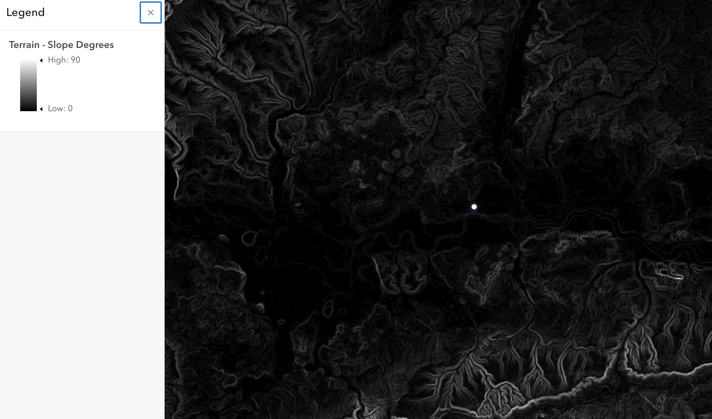
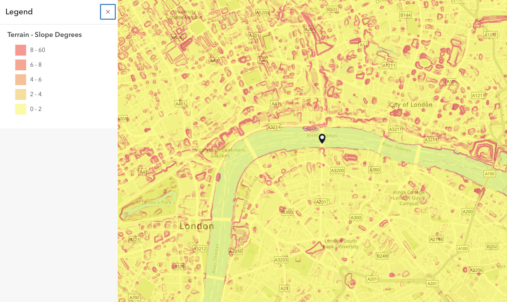
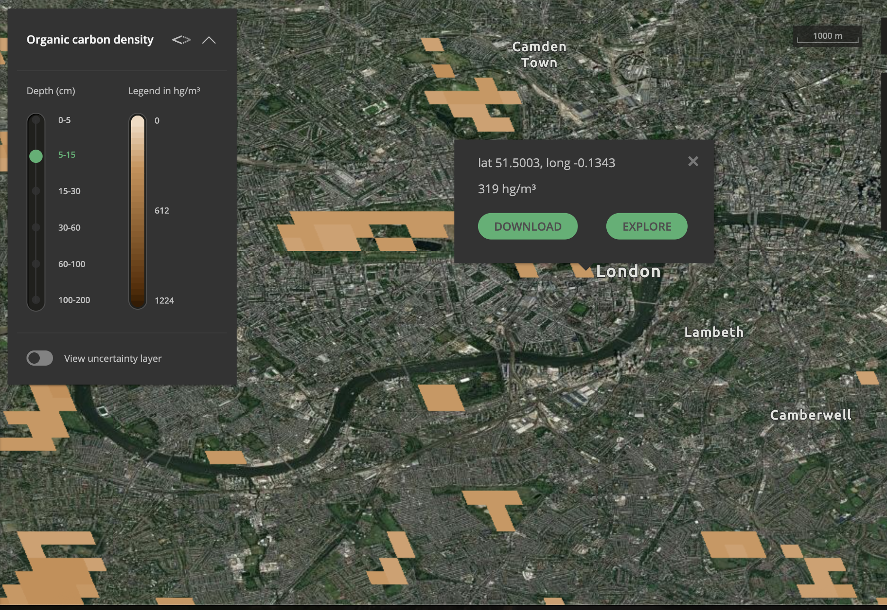
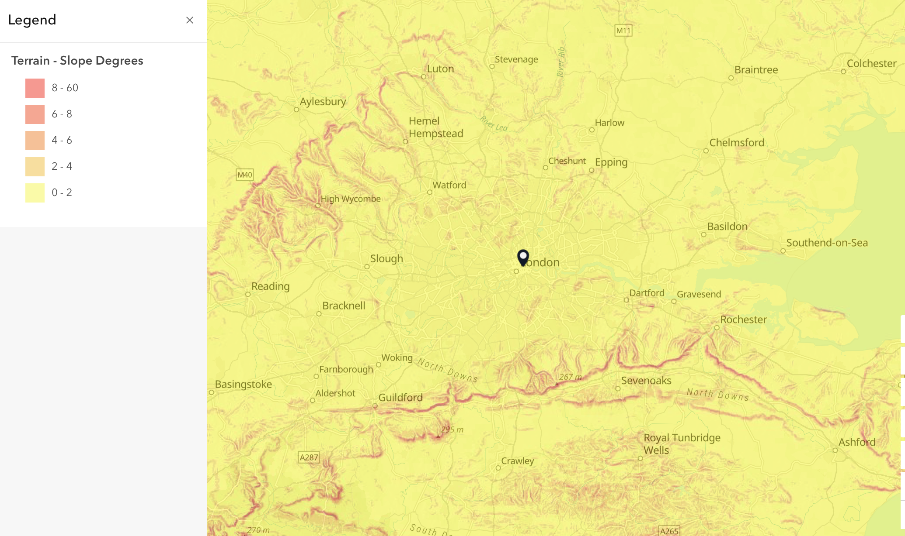

Week 03 · September 2026
Terrain and the Shape of My Site
The question
What is the terrain pattern around my site (London) near Millennium Bridge in London, and how does its shape affect the movement of water and material at this scale?
The data
I used the England_DTM1m elevation model from the Environment Agency. The finest dataset at my site has a 1 m cell size, an LE90 of 0.1 m, a Newlyn vertical datum, and data from 2020–2022. For soil, I used SoilGrids organic carbon density at a depth of 5–15 cm, measured in hg/m³.
The method
I derived slope from the elevation surface using a nine-cell neighbourhood. I compared a continuous Stretch rendering with my own classified rendering. The classified map uses five classes: 0–2°, 2–4°, 4–6°, 6–8°, and 8–60°. I also used SoilGrids to examine organic carbon density.
The evidence



What I found
My site is relatively typical of the low-lying Thames corridor, where the terrain is generally gentle. At the site scale, the ground generally falls from north to south, so surface water and loose material would tend to move toward lower-lying areas around the Thames. The soil map also shows spatial variation in organic carbon density, although these values are model predictions rather than direct measurements at every location.
What I found

At the larger scale, the Thames corridor is generally flatter, while higher-slope areas appear to the north and south of London. My site near Millennium Bridge fits this broader pattern. At the site scale, the ground generally falls from north to south, so surface water and loose material would tend to move toward lower-lying areas around the Thames. The soil map also shows spatial variation in organic carbon density, although these values are model predictions rather than direct measurements at every location.
AI use: AI-assisted for organizing and checking the HTML and journal wording using ChatGPT. I checked the map, metadata, symbology choices, SoilGrids results, and interpretations myself.